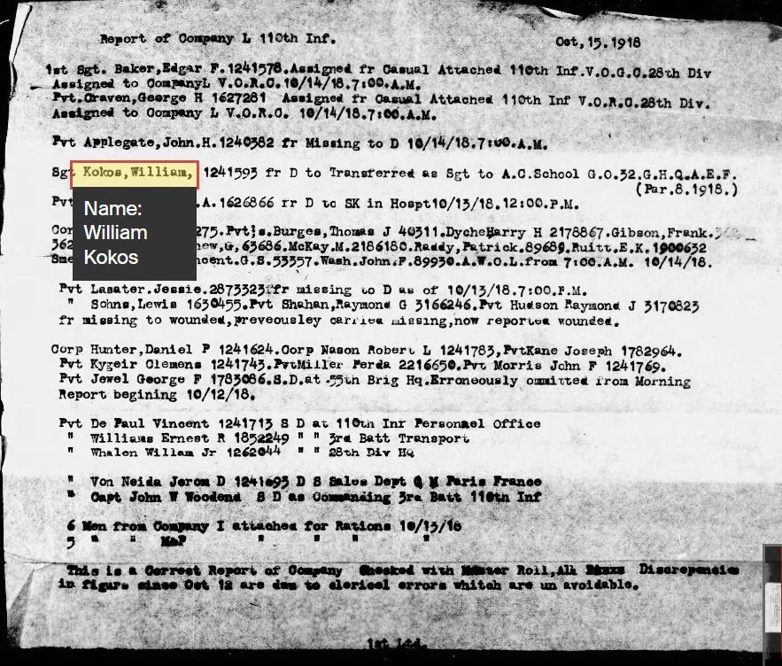
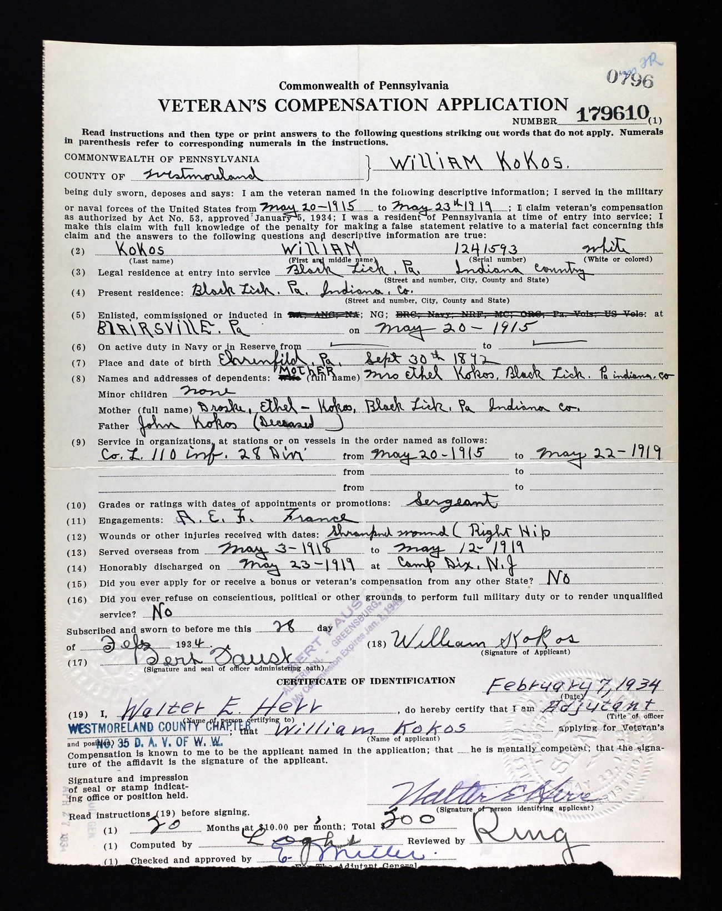
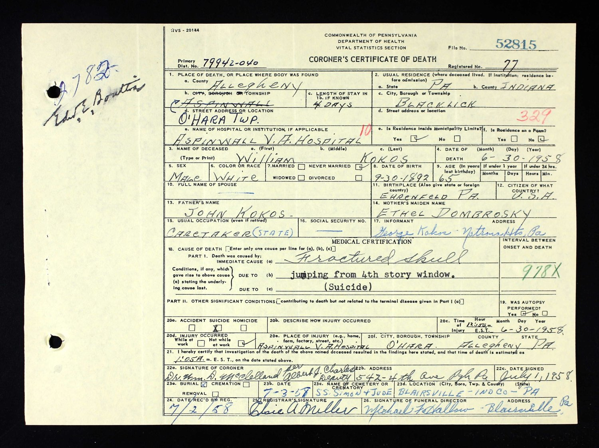
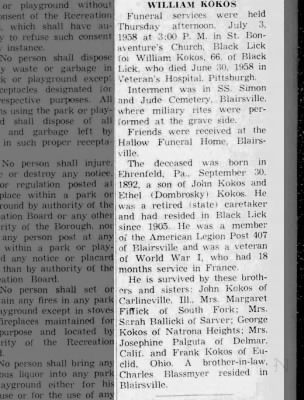
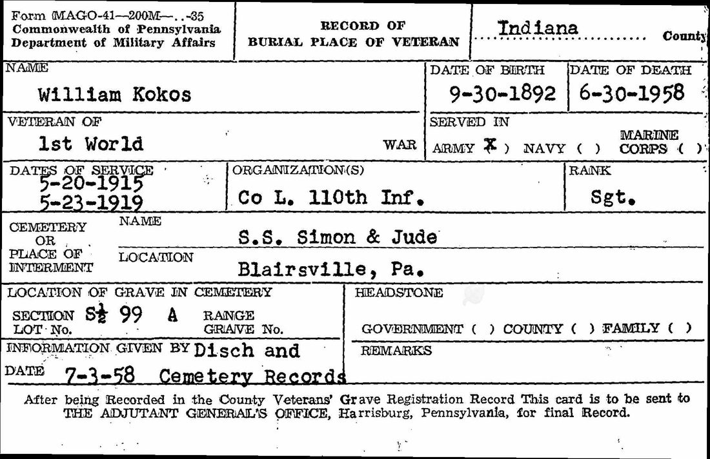

He commanded a company and then a battalion, and the Army sent him home a sergeant.
He was the man who ran the company Alexander Bryant belonged to, for every day Alexander belonged to it. This is what became of him.
One week after Châtel-Chéhéry, and days after commanding a battalion, Kokos gave up the First Sergeant’s post and was transferred to an officers’ training course. Edgar F. Baker, who had held the job before him, took it back.

The Armistice came before the course could make him an officer. He returned to duty on 21 January 1919 and was discharged at Camp Dix on 23 May 1919, still a sergeant.
His citation was published in Regimental General Orders No. 1 on 19 May 1919 — four days before his discharge, and after he had already crossed back to the United States. He was cited. He was never decorated.
He went home to Black Lick, Pennsylvania, and later to Westmoreland County. In February 1934 he applied for Pennsylvania’s veterans’ compensation and swore out an account of his own service: Company L, 110th Infantry, 28th Division; grade, Sergeant; wounds, shrapnel wound, right hip. Fifty months at ten dollars — five hundred dollars in all.
The field marked “Cited, decorated, or otherwise honored for distinguished services” he left blank.

The man who certified his identity on that application was the adjutant of the Westmoreland County chapter of the Disabled American Veterans of the World War. By 1934, that is what he was.
He never married. He went on living at Blacklick, in Indiana County — the same place he had given as home when he enlisted in 1915 and again in 1934. He worked as a caretaker for the state.
In the last week of June 1958 he was admitted to the Aspinwall Veterans Hospital in O’Hara Township. He had been there four days.
At 12.50 a.m. on 30 June 1958 he went out of a fourth-storey window. He died fifteen minutes later, at 1.05. The coroner recorded a fractured skull, and marked the box for suicide. He was sixty-five.

He was buried on 3 July 1958 at SS. Simon and Jude, Blairsville, Indiana County — the town where, forty-three years earlier, he had walked into an armoury and joined Company L.


The family account of him says he suffered a great deal of pain from the wound, and that he may also have suffered from what would now be called post-traumatic stress. The first half is documented — shrapnel in the right hip on 29 July 1918, and a disabled veterans’ organisation vouching for him in 1934. The second half is not, and cannot now be. It was not a diagnosis anyone was writing down in 1918, or in 1958.
He is not family. He is here because for twenty-two days in September and October 1918 he was the man who held the roster with Alexander Bryant’s name on it, made the morning report Alexander appeared in, and told him where to be — and because on the day Alexander was killed, Kokos was commanding the company.
Whatever passed between those two men is recorded nowhere. That it happened daily, for three weeks, is not in doubt.